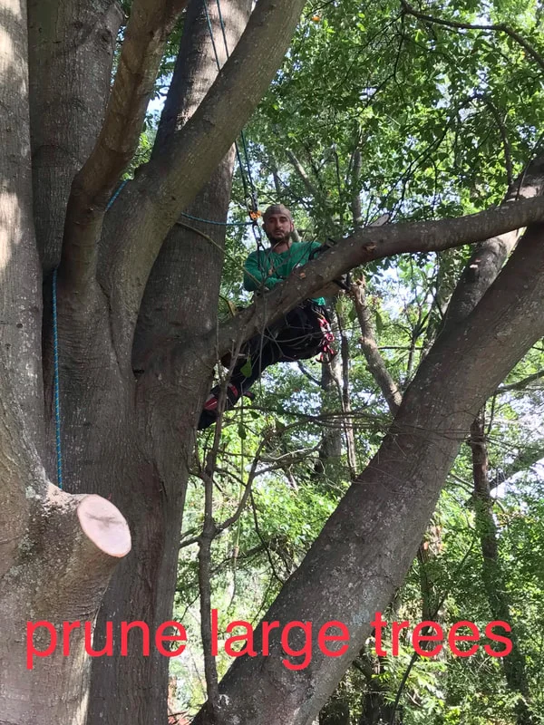
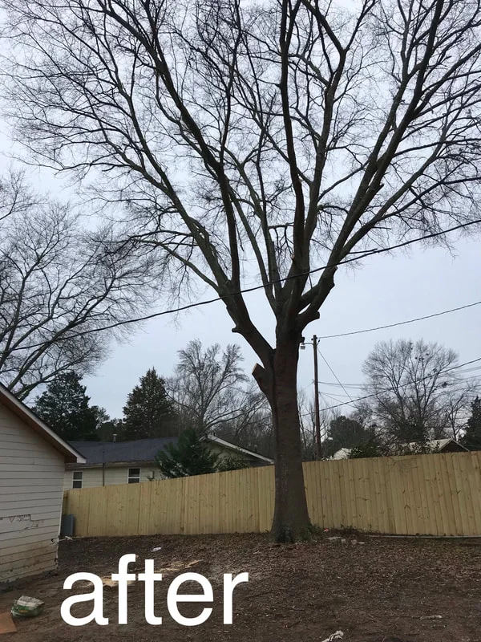
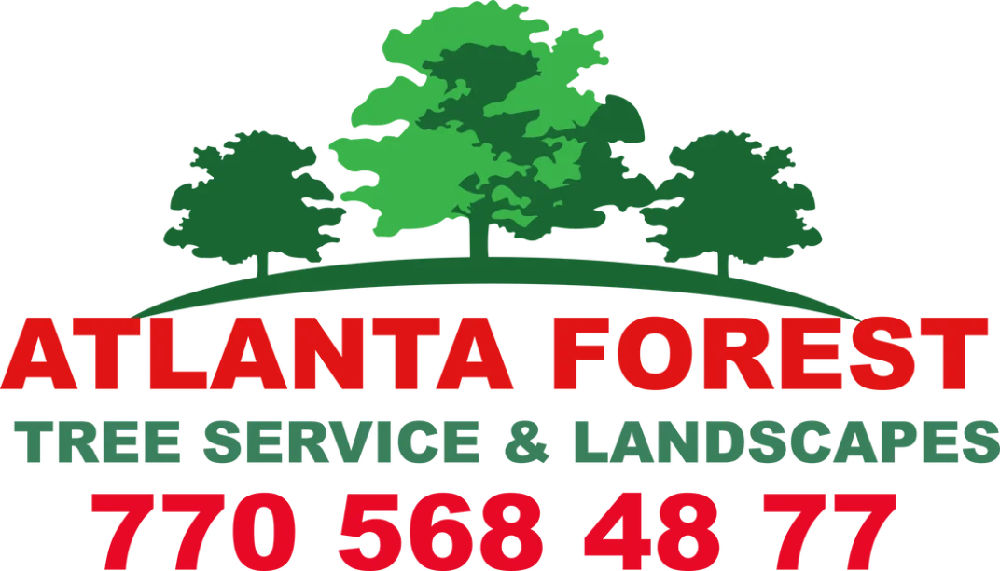
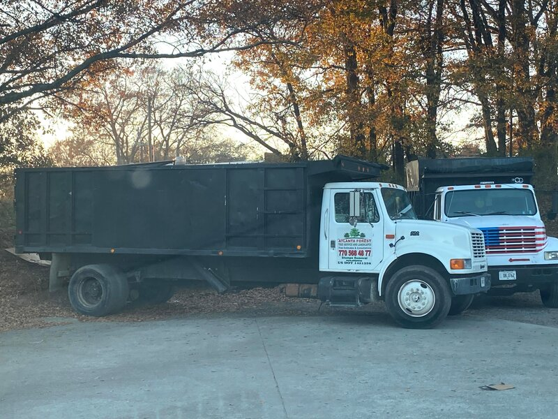
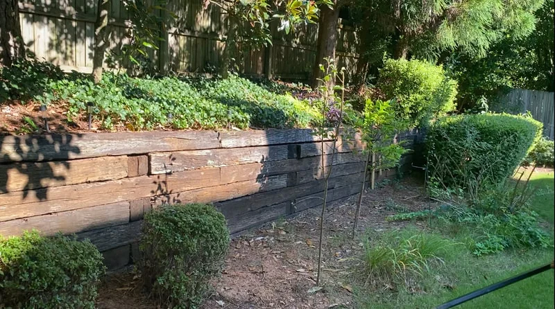
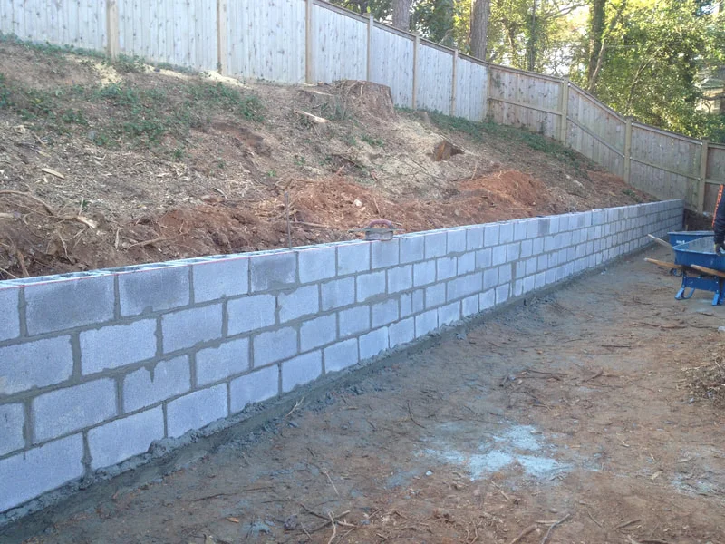

Tree & Landscape Services
Every job is quoted up front, performed by trained crews with proper rigging and equipment, and finished with a complete site cleanup.

Tree Removal
Whether it's a dead tree threatening your roof or clearing for construction, our crews remove trees of any size safely — with proper rigging, cranes for tight access, and full liability coverage.
- ✓Hazardous & emergency removals
- ✓Crane-assisted & tight-access jobs
- ✓Full debris haul-away included
- ✓Written estimate before any work begins

Tree Trimming & Pruning
Proper pruning extends the life of your trees and protects your property. We prune to ANSI A300 standards — no topping, no spike-climbing on live trees.
- ✓Crown thinning & raising
- ✓Deadwood & hazard-limb removal
- ✓Clearance from roofs, lines & driveways
- ✓Health assessments by trained arborists

Stump Grinding
We grind stumps 6–12 inches below grade and chase surface roots, leaving the area ready for sod, replanting, or hardscaping. Self-propelled machines fit through standard gates.
- ✓Grinding below grade, any stump size
- ✓Surface-root chasing
- ✓Backfill & cleanup included
- ✓Gate-friendly equipment for backyards

Emergency Storm Service
When a tree comes down on your home, every hour matters. Call or text and we dispatch the nearest crew for tree-off-structure removal and documentation for your insurance claim.
- ✓Fast dispatch during and after storms
- ✓Tree-off-house & tree-off-vehicle removal
- ✓Photos & documentation for insurance claims
- ✓Full debris cleanup

Landscape Design & Installation
After the trees are handled, we build landscapes that thrive in Georgia's climate — from foundation plantings and sod to complete front-yard renovations.
- ✓Design consultations on-site
- ✓Planting, sod & seasonal color
- ✓Beds with river stone
- ✓Mulch, pine straw & bed maintenance

Stone Work, Retaining Walls & Fences
Beyond trees and plantings, we build the hard features that frame your yard — flat stone patios and walkways, solid retaining walls, and replacing old fences with new wood.
- ✓Flat stone patios & walkways
- ✓Retaining walls
- ✓Replacing old fences with new wood
- ✓Excellent work at low prices